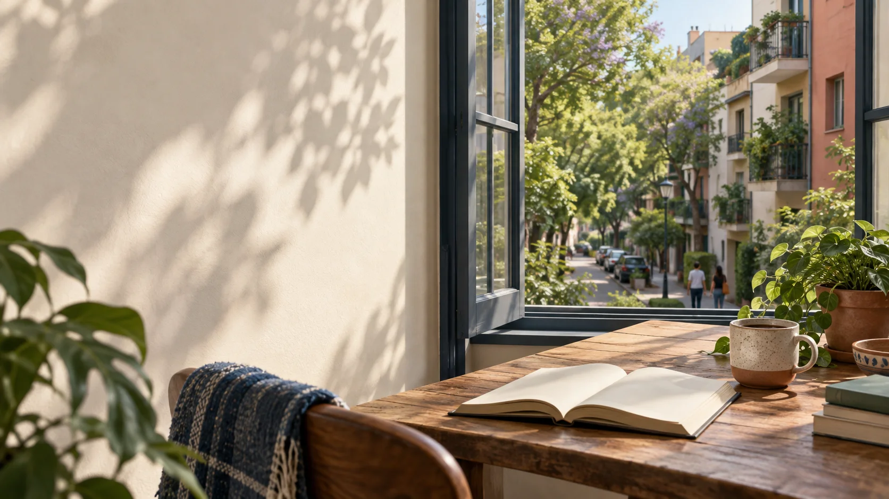

READ & DISCOVER
Discover Mexico
in Spanish
Graded readings about everyday life, culture, language and society — with audio, vocabulary and comprehension practice.
Interesting topics
Real-life content about Mexico.
Listen and read
Audio with each reading.
Build vocabulary
Key words and useful expressions.
Check and discuss
Comprehension questions and conversation prompts.
All readings
Loading readings…